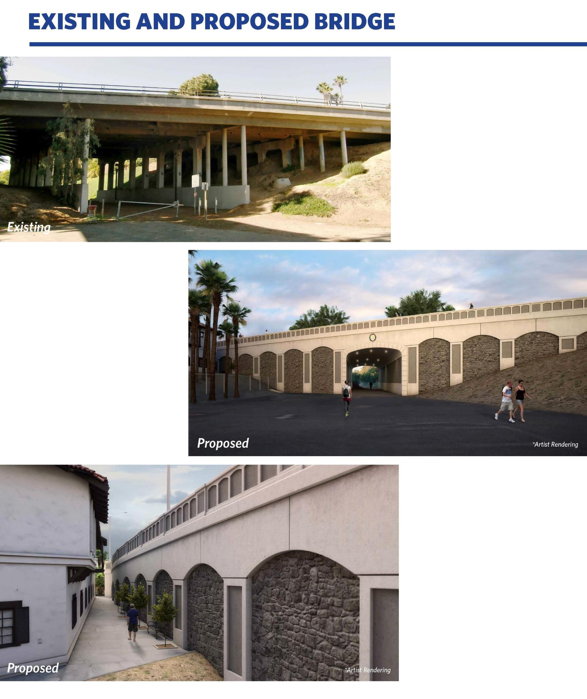
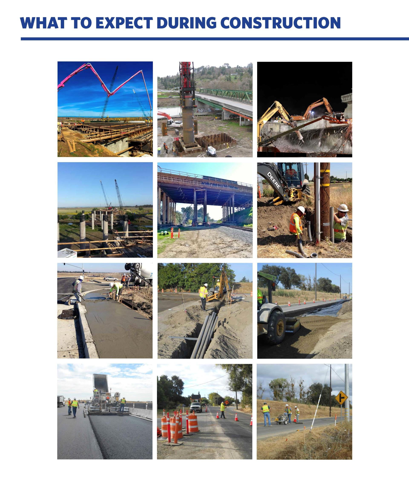
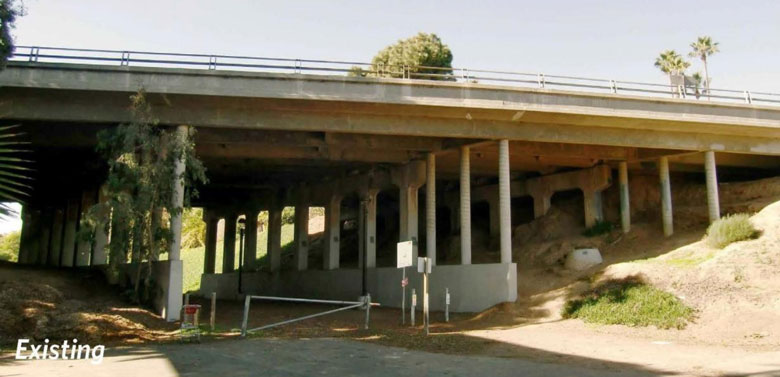

Project Details
- Category: Consultant Construction Management & Inspection Projects
- Owner: City of Manhattan Beach
- Location: Manhattan Beach, CA
- Delivery Method: Design-Bid-Build
- Status / Completion: 2021

The City of Manhattan Beach initiated the Sepulveda Boulevard Bridge Widening Project to reduce northbound traffic congestion, improve pedestrian access, and upgrade the bridge to modern seismic standards. The project involved widening the existing 165-foot bridge and upgrading approaches while coordinating with utilities, maintaining pedestrian access, and complying with ADA regulations.
S2 Engineering provided construction management, inspection, and QA/QC Resident and office engineering for all phases Materials sampling and testing (concrete, HMA, soils, CIDH piles) Oversight of bridge deck, retaining walls, embankments Traffic staging and public outreach Preparation and implementation of City�s QAP approved by Caltrans Documentation of CCOs, RFIs, and submittals
Maintained public access under the bridge during construction Coordinated utilities efficiently to avoid delays Enforced QA/QC procedures to prevent cost overruns Transparent reporting and communication with City and Caltrans
637347341354870000

637347341363300000

637746519341030000

images